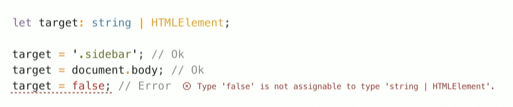

Nordic.js 2019
Konspekt
Magasin 9 — Stockholm 10 — 11 October 2019
Created by Roland Mandzolo
Nordic.js
My theory in anything you do is to keep exploring, keep digging deeper to find new stuff. Blythe
Danner
Valisin sellise tsitaadi kuna iseloomustab hästi nordicjs 2019 ürituse avamise kõned mida publikule
jagati.
David Khourshid
Mind-Reading with Adaptive and Intelligent User Interfaces
UIs can be developed in such a way that it automatically adapts to the user's behavior.
David Khourshid
Mind-Reading with Adaptive and Intelligent User Interfaces
Selles sessionis räägiti palju statement-idest kuna läbi selle saame defineerida kasutaja käitumist.
teooria põhialus seisnes sellest, et läbi UI on võimalik korduvate kasutaja käitumisest järeldada
põhi suund kuidas või millal lõpp tulemuseni jõutakse. Selleks,
et saavutada eesmärki lõpp tulemuses, mis on püstitatud teatud kasutajale. kõik võimalik siiski läbi
UI muudatuste teatud statement-ides ning kasutades eelnevalt analüüsitud kasutaja korduv käitumist.
David Khourshid
Mind-Reading with Adaptive and Intelligent User Interfaces
Lugemiseks: seoses statement / Millised meetodid on võimalik kasutada koodi mõistes statement
Mark Volkmann
Simplify Web App Development with Svelte
Tutvustati javascript framework SVELT
Võrreldes teiste frameworkida Svelt näitas oma võimed
1.Top-level variable on just kui component state kui kasutada htmlis
2. Ei kaalu palju. Small bundle size
Vaidehi Joshi
What we talk about when we talk about the JavaScript object model
A property descriptor holds internal metadata each property on a JS object
Vaidehi Joshi
What we talk about when we talk about the JavaScript object model
Objecti propertis on kaasas property descriptor mis iseloomustab end omakorda neli erinevat keys: value , writable, enumerable ja configurable Object.defineProperty()
Vaidehi Joshi
What we talk about when we talk about the JavaScript object model
Objecti same kategoriseerida:
data property saab olla string ,number, another object ja ka another function ehk
(value , writable)
accessor property tal on key: set nagu (data property key: writable) ja get nagu
(data property key: value) nad ei saa olle koos kombineeritud, sest siis me ei tea milline on õige
väärtus.
Vaidehi Joshi
What we talk about when we talk about the JavaScript object model
Getters and setters tänu versioon 5.1 (2011) javascriptile objektil sellised omadused mida polnud javascript version 3 probleem seisnes sellest oli vaja pidevalt uuesti käivitada (invoke) objecti funktsiooni selleks, et saada returned value. Get ja set lahendas dot süntaksiga selleks, et käivitada (invoke) koheselt
Vaidehi Joshi
What we talk about when we talk about the JavaScript object model
Objecti saame manipuleerida läbi enumerable ( kui true siis property descriptor
on ka saadaval isegi näiteks kui on loopi sees või object.dot key puhul) ja configurable
(kas on property descriptor muudetav true/false ) mõlemad saavad olla data property kui ka
accessor property
Extensible properties can be added to the object (Annab meile võimalust objektile
muutusi teha objecti üld tasadil kui ka property descriptor tasandil)
Object.isExtensible()
Vaidehi Joshi
What we talk about when we talk about the JavaScript object model
Vaidehi Joshi
What we talk about when we talk about the JavaScript object model
Properties with other javascript objects as the value need to be frozen explicitly (paneb object
property descriptor-ile automaatselt false writable-le kui ka configurable-le)
Object.freeze()
Object.seal()
(paneb object property descriptor-ile automaatselt writable-le annab true ja configurable-le false)
Vaidehi Joshi
What we talk about when we talk about the JavaScript object model
Eva Ferreira
Take on me, web browsers!
Selle esitluse puhul oli Fun Fact: Tegi ennast nähtamatuks läbi CSS muudates rohelise võ sinise värviga tausta.
Isabela Moreira
Localization: Implementation and Testing... Locally
Isabela Moreira
Localization: Implementation and Testing... Locally
Siin tõi Ta välja Fun Fact: Kui tähtis on tegelikult localiseerumine
KFC Tuues Hiina turule failiti slooganiga otse tõlkes hiina keelde oli välja tootud "Eat your fingers off"
Isabela Moreira
Localization: Implementation and Testing... Locally
Point mida tahtis tuua sisse on näiteks kui implementeerida mingit functsioonaalsust uue rakendusse siis peaks supportima ka selle rakenduse iseärasusi ja üld tulemust saada läbi localization-i
Isabela Moreira
Localization: Implementation and Testing... Locally
Probleem võib tulla siin keelte tõlkes
Localization includes not just translating strings and numbers but also includes thinkig about how we deal with symbols and images
Isabela Moreira
Localization: Implementation and Testing... Locally
Godfrey Chan
Thinking in TypeScript
Tutvustas publikule typescripti ning kuidas on keel ajalooliselt arenenud paremaks
Godfrey Chan
Thinking in TypeScript
Difference between TypeScript and JavaScript: TypesScript is known as Object oriented programming
language whereas JavaScript is a scripting language.
TypeScript has a feature known as Static
typing but JavaScript does not have this feature.
TypeScript has Interface but JavaScript does not have Interface.
TypeScript support optional parameter function but JavaScript does not support optional parameter
function.
Godfrey Chan
Thinking in TypeScript
in TypeScript variable can contain of more the one type of value
Godfrey Chan
Thinking in TypeScript
An interface defines the syntax that any entity must adhere to. Interfaces define properties, methods, and events, which are the members of the interface.
Godfrey Chan
Thinking in TypeScript
Null and Undefined
Godfrey Chan
Thinking in TypeScript
Typescript 2.0
Godfrey Chan
Thinking in TypeScript
Typescript 2.0
Godfrey Chan
Thinking in TypeScript
Typescript 3.0
Shelley Vohr
API Modernization: Building Bridges As You Cross Them
Shelley Vohr
API Modernization: Building Bridges As You Cross Them

Shelley Vohr
API Modernization: Building Bridges As You Cross Them
Godfrey Chan
Thinking in TypeScript
backward competitive
Callbacks Vs PromisesPiérre Reimertz
Gettin’ into the (Tensor)Flow
Mulle meeldis Piérre esitlus kuna ta esitas selle teema huvitavalt
Piérre Reimertz
Gettin’ into the (Tensor)Flow
Läbi hand bot tõi ta välja, et kui lahe oleks kui saaks kasutaja harjumist kuulata ning nihutada ui
vastavalt kasutaja harjumistest
Hand bot puhul oskab kuulata kas on tegu vasakukäe kasutajaga või parema

Piérre Reimertz
Gettin’ into the (Tensor)Flow
Piérre Reimertz
Gettin’ into the (Tensor)Flow
Neid bote võivad olla erinevad ja erineva eesmärkiga
James Simpson
Building Distributed Systems with Node.js
What is load balancing?
James Simpson
Building Distributed Systems with Node.js
What is load balancing?
James Simpson
Building Distributed Systems with Node.js
James Simpson
Building Distributed Systems with Node.js
James Simpson
Building Distributed Systems with Node.js
Talia Nassi
Testing in Production
Toi välja selle esitlusega seda, et tuleks läbi feature teste (feature flagging) lisada teste vastu
live rakendus keskkonda mitte ainult stage ja testkeskkonda
Staging ei saa olla samaväärne live keskkonnaga data ja kasutajate suhtes. Lõpuks live keskkond
on seda mida hinnatakse Kokkuvõtteks seega tuleks seda testida
Talia Nassi
Testing in Production
Talia Nassi
Testing in Production
Toi välja selle esitlusega seda, et tuleks ka teste lisada vastu live rakendust mitte ainult stage ja testkeskkonda

Talia Nassi
Testing in Production
Talia Nassi
Testing in Production
Katie Fenn
Memory: Don't Forget to Take Out the Garbage
Katie Fenn
Memory: Don't Forget to Take Out the Garbage
Katie Fenn
Memory: Don't Forget to Take Out the Garbage
Katie Fenn
Memory: Don't Forget to Take Out the Garbage
Katie Fenn
Memory: Don't Forget to Take Out the Garbage
Vitaly Friedman
Designing and Building With Privacy In Mind
Protect your data!
GDPR